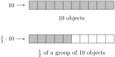
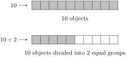

Relate division to multiplication both conceptually and algebraically.
Divide fractions involving both numbers and variables.
Consider the following story:
Suppose there are ten pieces of candy in the candy jar. You and a friend decide that you’ll each take one half of the candy. So you divide the candy into two equal portions, and you each enjoyed your share of five pieces of candy.
It not a particularly interesting story from the storytelling perspective. But something very interesting happened from a mathematical point of view. Let’s take a closer look.
In one way of looking at the story, we’re talking about a multiplication problem. Both you and your friend each get half of a group of 10.

On the other hand, this is a story about dividing a collection into two equal parts.

What this is showing us is that there is a relationship between multiplication and division. Multiplying by \(\frac{1}{2}\) is the same as dividing by 2. And while this is a simple example, it does help us to clearly see that there is a relationship. We can even write 2 as \(\frac{2}{1}\) (since \(2 \div 1 = 2\)) and use this to declare that dividing is the same as multiplying by the reciprocal of a number.
But this doesn’t actually explain anything. It just observes a computation and then declares it to be a rule without explaining bringing any insight as to why. This is another example of the difference between driving a car and understanding how it works.
There are many levels of understanding fraction division. We’re going to focus on the algebraic understanding here, and give you a chance to explore some of the more visual interpretations in the worksheets. Let’s take a look at a general division of fractions calculation: \(\frac{a}{b} \div \frac{c}{d}\text{.}\) Since fractions are a representation of division, we could rewrite this as a fraction where the numerator and denominator are themselves fractions:
At first, the may appear to be a worse situation, since the notation seems to be a mess of symbols. But when we write it this way, we can use what we know about rewriting fractions, which is that as long as we multiply or divide the top and bottom of a fraction by the same quantity, we do not change its value. With a little bit of insight, we can come to the conclusion that our goal is to make it so that the numerator and denominator of the overall fraction are just integers.
Notice that we have rewritten the division calculation as a multiplication calculation, and that the second fraction got flipped over. This is why some students learn fraction division as "keep-change-flip." But this pushes the calculation even deeper into the realm of simply following rules. So we will talk about this at a higher mathematical level by using proper terminology.
Definition20.1.The Reciprocal of a Fraction.
The reciprocal of the fraction \(\frac{a}{b}\) is \(\frac{b}{a}\) as long as \(a \neq 0\text{.}\) If \(a = 0\text{,}\) then we say that the reicprocal does not exist.
From this definition, we can say that dividing by a fraction is the same as multiplying by the reciprocal. And we can see that this is derived from writing division as a fraction and simplifying the fraction.
Sometimes, the problem will be given to you as fractions inside of fractions. At that point, you can go either multiply by the reciprocal or simplify the fraction by multiplying the top and the bottom by the same quantity.
This is what multiplication by the reciprocal looks like:
It is helpful to be familiar with both of these. As fractions become more complicated, there are times that multiplying by the reciprocal is the more difficult approach. Ultimately, those are decisions you will learn to make based on your experience and the specific expression you’re working with.
Try it!
Calculate \(\frac{ \frac{2}{3} }{ \frac{5}{14} }\) using both methods.
Just as with the previous section, we can reduce before multiplying in order to simplify our calculations, and we can also use this with fractions involving variables.
Calculate \(\frac{4}{15} \div \frac{8}{3}\) by rewriting the calculation as multiplication by the reciprocal.
2.
Calculate \(\frac{ \frac{4}{15} }{ \frac{8}{3} }\) by rewriting the calculation as multiplication by the reciprocal.
3.
Calculate \(\frac{ \frac{4}{15} }{ \frac{8}{3} }\) by multiplying the numerator and denominator by the same value to simplify the fraction.
4.
All three of these problems were the same underlying calculation, but presented and worked out in three separate ways. Which way makes the most intuitive sense to you?
We are going to work with one interpretation of fraction division that uses common denominators. The fraction can be interpreted as having \(a\) wedges of size \(b\text{.}\) This means that the division calculation \(\frac{16}{3} \div \frac{4}{3}\) can be understood as having 16 wedges of size \(\frac{1}{3}\) and creating groups of 4 wedges of size \(\frac{1}{3}\text{.}\) With this framework in mind, draw a diagram of 16 wedges of size \(\frac{1}{3}\) and divide it into groups of 4 wedges each. Use this to determine the result of the calculation.
2.
Using algebraic methods, verify that \(\frac{a}{c} \div \frac{b}{c} = \frac{a}{b}\text{.}\)
3.
Calculate \(\frac{12}{5} \div \frac{4}{3}\) using a common denominator.
Algebra is a skill, which means it requires practice to become proficient. But it will take more than rote repetition to get there. Deliberate practice is the thoughtful repetition of a task. For each of these sections, you will be given a list of specific skills or ideas to focus on as you practice thinking through the problems.
We opened this section with the idea that multiplication and division were related by thinking about how taking 10 objects and splitting it into two equal groups looks the same as taking half of a group of 10 objects. But we didn’t elaborate on the nature of that relationship.
Multiplication and division are known as inverse operations. Basically, it means that one operation undoes the other. We’ve actually already seen this idea, but without those words. When we were solving equations, we would run into situations that look like the following:
\begin{equation*}
\begin{aligned}
\frac{x}{3} \amp = 4 \\
x \amp = 12 \amp \eqnspacer \amp \text{Multiply both sides by $3$}
\end{aligned}
\end{equation*}
The act of dividing both sides by is undoing the multiplication of by on the left side of the equation. In fact, we can do the same thing when solving equations that involve fractions.
\begin{equation*}
\begin{aligned}
\frac{x}{3} \amp = 4 \\
x \amp = 12 \amp \eqnspacer \amp \text{Multiply both sides by $3$}
\end{aligned}
\end{equation*}
The idea that multiplication is the inverse of division and that division is multiplication by the reciprocal has another important parallel. We run into the exact same situation with addition and subtraction. When solving equations, you have to subtract to undo addition and you have to add to undo subtraction.
\begin{equation*}
\begin{aligned}
x + 4 \amp = 9 \\
x \amp = 5 \amp \eqnspacer \amp \text{Subtract $4$ from both sides}
\end{aligned}
\end{equation*}
\begin{equation*}
\begin{aligned}
x + 4 \amp = 9 \\
x \amp = 5 \amp \eqnspacer \amp \text{Subtract $4$ from both sides}
\end{aligned}
\end{equation*}
It is often said that subtraction is addition of the opposite. This phrase is very close to our division phrase. We will put these phrases next to each other to see the comparison.
This shows us that addition and multiplication are the fundamental operations on numbers. In some ways, this may help to explain why addition is easier than subtraction and why multiplication is easier than division. Some operations are just more basic and more fundamental than others. These ideas are also at the core of an area of mathematics known as field theory, which is built on many of the ideas that we’ve already encountered. So it turns out that high level mathematics has its roots in things that we teach to all students.
Section20.5Going Deeper: Fractions Inside of Fractions
The technique of multiplying the top and bottom of a fraction by the same value to eliminate the denominators seems odd when working with fractions involving numbers, but its value goes up significantly when working with rational expressions. One of the more algebraically difficult situations to work with is when you have fractions inside of other fractions. It’s not that anything about the process is different, but the sheer number of symbols can cause students to feel overwhelmed and make mistakes.
Here is an example. The goal is to simplify the following fraction:
We will first do the calculation by adding the fractions in the numerator and denominator, and then dividing the resulting fractions by multiplying by the reciprocal.
We will now do the same calculation, but we will multiply the numerator and denominator by the same value to eliminate the fractions inside of the fraction.
Both of these calculations involve a lot of steps, and neither one is necessarily better than the other. The first one required the proper execution of more fraction calculations, but the second one required a factorization step to ensure that the expression cannot be reduced. Both of those steps can be difficult in their own ways.
It should be noted that expressions that are this messy do not appear particularly frequently, but if you continue along in mathematics, you will find that calculations involving fractions inside of fractions do appear. There are two reasons for including this calculation here. The first is to expose you to some of the more intricate algebraic manipulations that arise in higher levels of mathematics. The second is to point out the fact that even though the algebra may look complicated, there’s nothing here that you haven’t seen before or is beyond your ability. Your capacity for handling complicated expressions like these will grow as you continue to practice and gain experience.